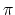
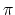
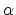
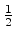

Dr. Extreme experimentally made an extremely precise telescope to investigate extremely curi- ous phenomena at an extremely distant place. In order to make the telescope so precise as to investigate phenomena at such an extremely distant place, even quite a small distortion is not allowed. However, he forgot the influence of the internal gas affected by low-frequency vibration of magnetic flux passing through the telescope. The cylinder of the telescope is not affected by the low-frequency vibration, but the internal gas is.
The cross section of the telescope forms a perfect circle. If he forms a coil by putting extremely thin wire along the (inner) circumference, he can measure (the average vertical component of) the temporal variation of magnetic flux:such measurement would be useful to estimate the influence. But points on the circumference at which the wire can be fixed are limited; furthermore, the number of special clips to fix the wire is also limited. To obtain the highest sensitivity, he wishes to form a coil of a polygon shape with the largest area by stringing the wire among carefully selected points on the circumference.
Your job is to write a program which reports the maximum area of all possible m-polygons (polygons with exactly m vertices) each of whose vertices is one of the n points given on a circumference with a radius of 1. An example of the case n = 4 and m = 3 is illustrated below.
In the figure above, the equations such as `` p1 = 0.0" indicate the locations of the n given points, and the decimals such as ``1.000000" on m-polygons indicate the areas of m-polygons.
Parameter pi denotes the location of the i-th given point on the circumference
(1 i
i n). The
location p of a point on the circumference is in the range
0
n). The
location p of a point on the circumference is in the range
0 p < 1, corresponding to the range
of rotation angles from 0 to 2 radians. That is, the rotation angle of a point at p to the point
at 0 equals 2p radians. ( is the circular constant 3.14159265358979323846....)
p < 1, corresponding to the range
of rotation angles from 0 to 2 radians. That is, the rotation angle of a point at p to the point
at 0 equals 2p radians. ( is the circular constant 3.14159265358979323846....)
You may rely on the fact that the area of an isosceles triangle ABC (AB = AC = 1) with an interior angle BAC of  radians (0 < < ) is sin , and the area of a polygon inside a circle with a radius of 1 is less than .
The input consists of multiple subproblems followed by a line containing two zeros that indicates the end of the input. Each subproblem is given in the following format.
| n | m | ||
| p1 | p2 | ... | pn |
n is the number of points on the circumference
(3 n
n 40). m is the number of vertices to
form m-polygons
(3
40). m is the number of vertices to
form m-polygons
(3 m
m n). The locations of n points,
p1, p2,..., pn, are given as decimals
and they are separated by either a space character or a newline. In addition, you may assume that
0
n). The locations of n points,
p1, p2,..., pn, are given as decimals
and they are separated by either a space character or a newline. In addition, you may assume that
0 p1 < p2 < ... < pn < 1.
p1 < p2 < ... < pn < 1.
For each subproblem, the maximum area should be output, each in a separate line. Each value in the output may not have an error greater than 0.000001 and its fractional part should be represented by 6 decimal digits after the decimal point.
4 3 0.0 0.25 0.5 0.666666666666666666667 4 4 0.0 0.25 0.5 0.75 30 15 0.00 0.03 0.06 0.09 0.12 0.15 0.18 0.21 0.24 0.27 0.30 0.33 0.36 0.39 0.42 0.45 0.48 0.51 0.54 0.57 0.61 0.64 0.66 0.69 0.72 0.75 0.78 0.81 0.84 0.87 40 20 0.351 0.353 0.355 0.357 0.359 0.361 0.363 0.365 0.367 0.369 0.371 0.373 0.375 0.377 0.379 0.381 0.383 0.385 0.387 0.389 0.611 0.613 0.615 0.617 0.619 0.621 0.623 0.625 0.627 0.629 0.631 0.633 0.635 0.637 0.639 0.641 0.643 0.645 0.647 0.649 0 0
1.183013 2.000000 3.026998 0.253581